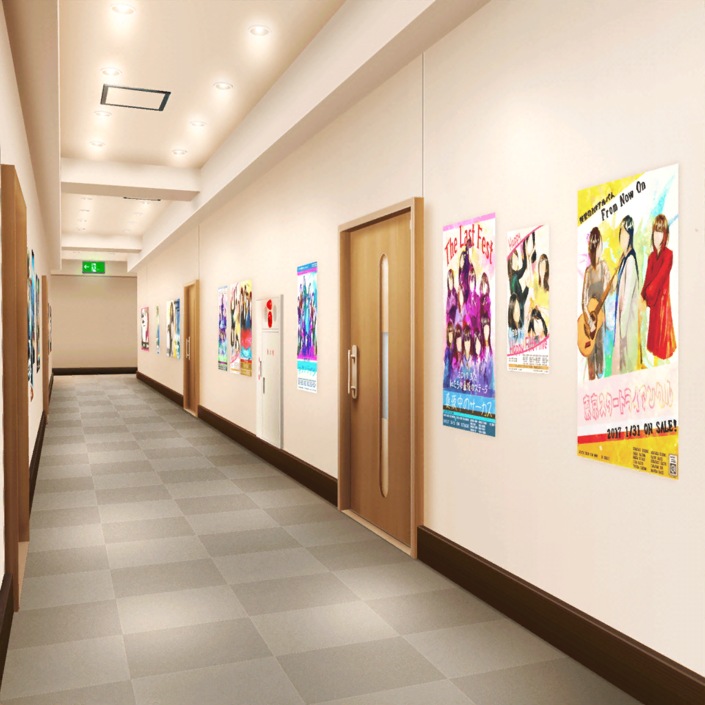
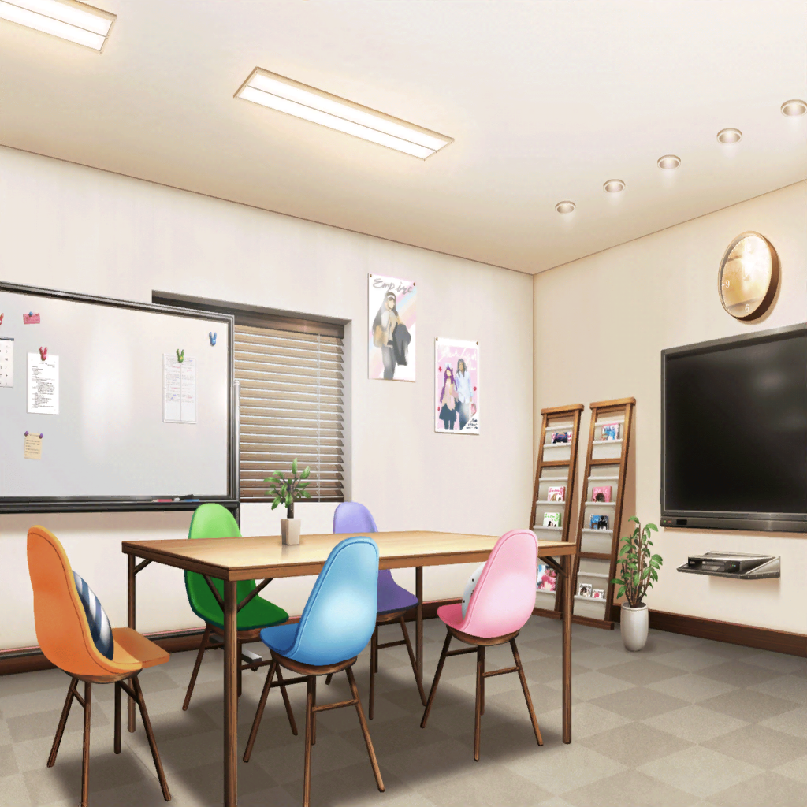

数日後
芸能事務所 廊下
ひまり
い、いよいよだね……？ パスパレのみなさんに
曲を聞いてもらうの……
蘭
……
つぐみ
……
モカ
……ねー、やっぱり歌詞考えて屋上にいた日以来、
あたし風邪ひいた気がする
ひまり
今言うの、それ！？
巴
あはは……けど、モカ見てたら
ちょっと緊張が解けたよ
彩
みんな、お待たせ！ ごめんね！
ひまり
あ、彩さん！
日菜
曲ができたってほんとー？
早く聴こうよ聴こうよ〜！
千聖
ええ、私もぜひ聴きたいわ
蘭
はい。これを……

芸能事務所 会議室
麻弥
素晴らしい曲ですね！
Afterglowらしい疾走感のある王道ロック！
最高ですっ！
スタッフ
麻弥さんの言う通り、本当に素晴らしい楽曲ですね！
みなさん、改めてこちらのお話を
引き受けてくださってありがとうございます
千聖
短期間でこれだけすばらしい楽曲を作れるなんて、
驚いたわ。みんな、お疲れ様
スタッフ
みなさんにこのお話を相談して本当によかったですよ！
ありがとうございます！
ひまり
よ、よかった〜……！
そう言っていただけてすごく嬉しいですっ！
彩
歌詞って、私達のことを書いてくれてるのかな？
蘭
はい。パスパレのみなさんからいろんな話を聞いて、
それをあたし達がどう受け止めたか……それを歌詞にしました
イヴ
『紺碧 空の色、教えてくれた』……これも、
私達のことなのでしょうか？
日菜
あたし達のバンド名にはパステルって言葉が入ってるよね。
衣装とか雰囲気からもあんまり紺碧って感じはしないよねー？
なんでなんでー？
蘭
そ、それは……
モカ
蘭、説明しちゃってー
蘭
あの……みなさんの話を聞いて、あたし達は自分達の
世界とか、視野とか、そういうものがすごく狭くて
小さかったことに気がついたんです
蘭
あたし達のバンド名はみんなで見た夕焼け空が由来なんですけど、
パスパレのみなさんの話を聞いて、夕焼けじゃない空の色も
あるんだって気づいたっていうか……
蘭
……なんか、めっちゃ恥ずかしいんだけど、これ……！
千聖
ふふっ。大丈夫、ちゃんと伝わってるわよ。
蘭ちゃん、それにみんな。こんな素敵な曲と歌詞をありがとう
彩
みんなで考えてくれた歌詞……大切に歌うからね！
ひまり
はいっ！ 楽しみにしてます！
日菜
ギターもるんっ♪ て感じで弾いちゃうよー！
楽しみっ！ 早く演奏してみたいなあ〜
モカ
モカっ♪ てニュアンスもいれてくださいー
日菜
モカっ♪ てどういう感じ？ 教えて教えてー！
巴
あの二人……なんか、すごいな
ひまり
ホントだね……
イヴ
ツグミさん、この曲を練習する時、よければ
ツグミさんからもアドバイスをいただきたいです！
イヴ
せっかくAfterglowのみなさんが作ってくれた曲です！
どんな思いで演奏をしているのか、お気持ちをもっとちゃんと
知っておきたいですっ！
つぐみ
うんっ！ 私でよければ、もちろんだよ！
彩
蘭ちゃん、巴ちゃん。
曲作りしてみて、どう思った？
巴
えっと、それは……
彩
曲作りの相談をした時、蘭ちゃんと巴ちゃんが
少し不安そうにしていたから気になっちゃって
蘭
正直に話しても……怒りませんか？
千聖
もちろん。大丈夫よ♪
蘭
……ちょっとコワイですけど……
正直、最初は不満でした。あたし達の曲はあたし達のものだって
思ってるし……
蘭
あたし達は『いつも通り』バンドをやっていられればいいと
思ってるから、スタッフの人が言ってた、認知度をあげられる
とかって話も正直理解できませんでした
蘭
でも、実際曲を作ってみて、自分達のちっぽけさに
気づけたり、夜空を眺める楽しさを知れました。
だから、その……たまにはいつも通りじゃないのもいいのかなって
巴
要は曲作り楽しかったってことです。
アタシも最初は蘭と同じ気持ちでしたけど、勉強になりました
蘭
ち、ちょっと……！
彩
あははっ。それならよかった！
ちょっと安心したよ
千聖
『いつも通り』じゃないのもいい……
そう思えたことって、あなた達にとって
とても大きなことじゃないかしら？
蘭
はい。今はそう思えます
千聖
よかった。この経験で蘭ちゃん達、
実際に『成長』できたみたいね
蘭
はい。だからその……
蘭
あり……
巴
ありがとうございました！
蘭
巴！
巴
あっははは。蘭て、ホント素直じゃないよな？
お礼くらいちゃんと言えよ〜！
蘭
別に……言えるし！
ひまり
なになにー？ どうしたの？
巴
んー？ ああ、蘭が素直じゃないなって話！
蘭
もういいからその話！
千聖
……これが彼女たちの『いつも通り』、なんでしょうね
彩
うん、そうだね。ふふっ、楽しそう！
ひまり
彩さん、千聖さん！ よかったらみんなで写真でも
撮りませんか？
彩
わあっ！ 撮ろう撮ろう！ 今いくよー！
ね、千聖ちゃんも行こうっ！
千聖
ええ、もちろん♪